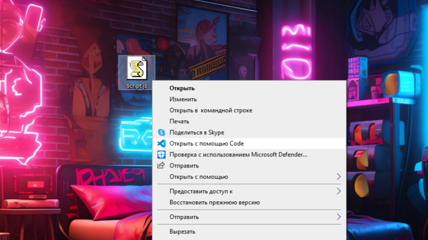
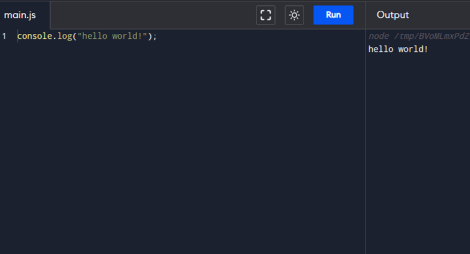

Введение
JavaScript – это язык программирования, который используют разработчики для создания интерактивных веб-страниц.
Именно JavaScript отвечает за действия во frontend стороне сайта
К примеру действия после нажатие кнопки обрабатывает JavaScript и с помощью него вы можете сделать какое нибудь действие для данной кнопки
Другими словами JavaScript - это язык, для взаимодействия с пользователем
Код на JavaScript можно писать в разных редакторов коды и компиляторах,лично я использую Visual Studio Code
В этой документации, я сделаю как можно меньше воды, больше примеров, понятным языком
После каждой теории и моего обьеснения, будут задачки, для закрепления материала,без них нет смысла! Знания всегда нужно применять на практике.
Начало работы
В качестве примера, я буду использовать Vusial Studio Code
Сначало же вам нужно установить vs code и установить в нем самом, язык JavaScript
Существует много способов,но я покажу один и как по мне самый удобный и понятный, вам стоит создать новый файл с расширением ".js" , к примеру - script.js
щелкаем правой кнопкой мыши и выбираем "открыть с помощью code"
Код на JavaScript можно писать прямо в html файле с помощью тега "script" либо в отдельном файле использовав : тег script и в качестве атрибута указать scr и в нем название нашего файла и папку(если есть)
Oсновы
Первая программа
"Hello World" это база,от нее не куда не убежишь
Рассмотрим 2 примера для вывода:
-Вывод на консоль
-Вывод текста в качестве сообщения на сайте
в первом случае,для вывода на косноль используется функция " console.log(); "
Тоесть, мы обращемся к классу сonsole и вызываем его функцию log , а в качестве параметров передаем то, что нам нужно для вывода на консоль
Если вы хотите просто текст,тогда нужно использовать ковычки
Во втором же случае вам нужно использовать функцию "alert("text");" и текст будет выведен в качестве уведомления на сайте.
Переменные
Переменные являются важной частью любого языка и к тому же очень простой
Простым язвком, переменная - это контейнер,в котором программист и машина могут хранить данные
к примеру: числа, драбные числа, строки, булевые значения, символы и тд
для того, чтобы объявить переменную, используется ключевое слово let, после него идет имя переменной
let
hello;
Но пока что эта переменная ничего не хранит и ничего не делает
что бы присвоить ей значение, нужно прописать следующее:
let
hello= hi;
В итоге мы объявили переменную с названием hello и просвоили ей строчное значение hi
В одной строке можно сразу объявить много переменных
let
hello = "hi", let five = 5, let boolean = true;
Правда, лучше так не делать из за того, что код будет менее читабельный
Кроме let еще существует ключевое слово var, о кoтором я поговорю попoзже
Переменные можно изменять, но если программист уверен, что изменять ее не стоит, тогда поможет ключевое слово const
const
p= 3,14;
что бы обратиться к переменной, нужно прописать ее имя, к примеру вывод на консоль:
let
number = 34;
console.log(number);//Вывод: 34
Задачки
1. Объявите две переменные: par и child
2. Запишите строку "hello" в переменную par
3. Скопируйте значение из par в child
4. выведите переменную child через console.log(); а потом через alert();
Комментарии
Комментарии это очень удобная вещь в языках программирования, закоментировать код, это означает убрать часть кода что бы ее не проверял компилятор и не жаловался на них, а сам код не будет убираться пока вы не раскоментируете часть кода
Еще комментарии используют для пояснения что где и для чего было сделано
виды комментариев:
-Однострочные
-Многострочные
// let
a = 6;
- это однострочный комментарий
Типы Данных
Для того, чтобы работать с переменными и не только, вам нужно знать какие бывают типы данных
JavaScript - это НЕстроготипизированный язык, тоесть среда разработки сама понимает, где и какой тип данных в отличии от java и с# к примеру
Чтобы узнать тип данных вопспользуемся функцией typeof();
Целое число
это обыкновенное число, не дробное
let
number = 34;
console.log(typeof(number)); //int (Целое число)
Строка
строка(sting) должно быть заключена в кавычки
letstr= "Привет";
letstr2= 'Одинарные кавычки тоже подойдут';
letstr3= `Обратные кавычки позволяют встраивать переменные ${str}`;
Последний пример это называется интерполяция строк, это очень полезная фича, если нужно выводить много текста и чередовать их с переменными
Булевый(логичесский тип)
Булевый тип (boolean) может принимать только два значения: true (истина) и false (ложь).
Такой тип, как правило, используется для хранения значений да/нет: true значит «да, правильно», а false значит «нет, не правильно».
Null
Указывает на то, что объект ни на что не ссылается, тоесть просто пустышка в которой нет пользы
Undefined
Указывает на то, чт значение не было присвоено
letstr;
console.log(str);//Undefined
Задачки
Что выведет код?
letstr = "stas";
console.log( `hello ${1}` );// ??
console.log(`hello ${"str"});// ??
console.log( `hello ${str}` );// ??
Операторы Сравнений
В JavaScript Операторы Сравнений записываются так:
Больше/меньше: a > b, a < b.
Больше/меньше или равно: a >= b, a <= b.
Равно: a == b, для сравнения используется двойной знак равенства ==. Один знак равенства a = b означал бы присваивание.
Не равно. В математике обозначается символом ≠, Ав JavaScript записывается как a != b.
Результат сравнения имеет лоигчесский тип
True(истина, правда)
False(ложь, не правда)
К примеру:
console.log (10 > 5); // True
console.log
(5 >8);
//false
Рузультат сравнения можно присвоить переменной:
let
result
=
5
>
2
;
console.log
(result);
// true
Сравнение разных типов данных
Если сравниваются разные типы данных, то JavaScript неявно приводит их к одному типу
console.log
("2" == 2; )
//true, Строка "2" была неявно преобразованна в число 2
А что такое Явное и Неявное преобразование мы скоро с вами разберем
Строгое Сравнение
Для строгого сравнения нам нуно использовать оператор "==="
Оператор строгого равенства === проверяет равенство без приведения типов.
console.log
(0 == false)
//True
True, Потому что среда разработки преобразовало число 0 в булевое значение false
true == 1
false == 0
console.log
(0 === false);
//false
А здесь же среда разработки проверила значения без приведения одних типов данных
Сравнение Строк
при сравнении строк в JavaScript используется алфавитный способ и кличество символов
console.log
("Я" > "А");
//True
console.log
( "Спящий" > "Сны");
// true
Задачки
Что будет результатом сравнений?
10
>
10
"ананас" < "яблоко"
"14" >
"34"
Базовые Операторы
В JavaScript поддерживаются следующие математические операторы:
Сложение +,
Вычитание -,
Умножение *,
Деление /,
Взятие остатка от деления %,
Возведение в степень **.
также можно складывать строки:
let
str
=
"my"
+
"String";
console.log
( str );
// myString
Преобразование Типов Данных
Существует 2 вида преобразования:
Явное
Неявное
Явное преобразование - это когда пребразование делает сам программист
а вот Неявное пребразование делает среда разработки автоматичесски если не будет потерь данных
В явном преобразовании вы говорите машине, что я беру все на свой страх и риск, если будет потеря данных
Вот пример явного преобразования
let
value
=
35;
console.log
( typeof (value) );
// int Целое Число
value
=
String
(value);
console.log
( typeof (value) );
// sting, Строка
Тоесть, для явного преобразования нам нужно перед переменной указать тип данных в который мы хотим преобрзовать
Цыклы
if-else
Конструкция if-else проверяет условие, которое вы ставите ей и если это условие верно выполняется тело конструкции, иначе не выполняет его
if
(
name
==
"sasha"
)
{
console.log
( "Привет,саша" );
}
else
{
console.log
( "Привет, НЕ Саша" );
}
В груглых скобках нужно прописывать условие, а в фигурных скобках {то, что будет выполнено если условие == true}
Если 'if' имеет только одну строчку кода, тогда можно не использовать фигурные скобки {}
if
(
name
==
"sasha"
)
console.log
( "Привет,саша" );
Несколько условий, else if
Если вам нужно поставить несколько условий, тогда можете использовать 'else if'
if
(
name
==
"sasha"
)
{
console.log
( "Привет,саша" );
}
else if
(
name
==
"alex"
)
{
console.log
( "Привет, Алекс" );
}
else if
(
name
==
"maks"
)
{
console.log
( "Привет, Макс" );
}
else
{
console.log
( "Привет, НЕ Саша" );
}
Блок else
Если условие не выполнилось, тогда будет выполняться условие в теле "else"
Ключевое слово 'else' не обязательно после 'if'
Условный оператор '?'
Если вам нужно определить перменную взависимости от условия, тогда лучше использовать слудующий пример:
letaccessAllowed = (yourAge > 25) ? true : false;
Этот способ очень хорош своей короткостью, сейчас я вам объясню, что там и для чего:
letresult = (условие) ? 1 значение : 2 Условие иначе;
Тоесть, если условие не выполниться, тогда будет 2 значение, а если выполниться, то будет первое значение
Задачки
1. Создайте 2 перменные типа int. Выведите меньшее из них.
Создайте 2 переменный 'age' и 'name' тоесть, имя и возвраст. Если возраст пользователя больше 18, то вывести строку "Добрый вечер, name! Вы совершеннолетний, поздравляем!", иначе вывести строку "Привет, name! Приносим извинения, но вы не можете гулять после 22:00".
Цыклы while, for и do while
Цыкл 'while'
Данный Цыкл имеет вот такой синтаксис:
while
( Условие ){
// тело цыкла(то, что будет выполняться если условие == true)
}
Код из тела цыкла будет выполнен,если условие будет истинно (true)
Вы должны понимать что 'while' переводиться как 'пока'
К примеру - если переменная равно 5, тогда выполниться тело цыкла
Вот пример:
while
( i > 10 ){
console.log ( "Привет" );
i++;
// это означает что переменная будет увеличена на 1 за каждый заход в тело цыкла
// это нужно чтобы цыкл не был бесконечным
}
В результате, программа выведет на консоль 10 раз "Привет"
Также, как и if else и тд, его можно записать в одной строке если тело состоит из 1 строчки
while
( i == 1 )
console.log ( "Привет" );
Цыкл 'do while'
Вот пример этого цыкла:
do
{
console.log
( "Привет" );
i++;
}
while
( i > 10 );
Смысл ключевого слова 'do' в том, что оно гарантирует хотя бы одну работу цыкла, а уже потом проверяет условие
Цыкл for
Это тот же самый while, только в нем самом можно обявить переменную для подсчета
В некоторых случаях лучше использовать цыкл for, а в других - while
Вот синтаксис:
for ( объявление переменной; условие; шаг; ) {
// ... тело цикла
}
Если переменная уже объявлена, можно пропустить 1 пункт
Пример цыкла for:
for (let i = 0;i<3;i
i++; ) {
console.log
( i );
}
// выведет: 0, 1, 2
Прерывание цыкла, ключевое слово 'break'
Ключевое слово 'break' делает выход из цыкла
Вот пример:
for (let i = 0;i<3;i
i++; ) {
console.log
( i );
if
( i == 1)
break;
}
// выведет: 0, 1
Если переменная i будет равна еденице, тогда мы выходим из цыкла
break можно применить в любом цыкле
Ключевое слово continue
Ключевое слово continue делет переход к следующему шагу, итерации
При её выполнении цикл не прерывается, а переходит к следующей итерации (если условие все ещё равно true).
for (let i = 0;i<3;i
i++; ) {
console.log
( i );
if
( i == 1)
continue;
}
// выведет: 0, 2
break и continue нельзя применить с оператором '?'
Итого
Разобрали 3 вида циклов:
if else
while
for
Задачки
1.Выведете вычитания 1000 и 7 пока результат будет больше нуля
2. Напишите программу, в которую пользователь вводит два числа и выводит результат их умножения. При этом программа должны запрашивать у пользователя ввод чисел, пока оба вводимых числа не окажутся в диапазоне от 0 до 10. Если введенные числа окажутся больше 10 или меньше 0, то программа должна вывести пользователю о том, что введенные числа недопустимы, и повторно запросить у пользователя ввод двух чисел. Если введенные числа принадлежат диапазону от 0 до 10, то программа выводит результат умножения.
3. За каждый месяц банк начисляет к сумме вклада 7% от суммы. Напишите консольную программу, в которую пользователь вводит сумму вклада и количество месяцев. А банк вычисляет конечную сумму вклада с учетом начисления процентов за каждый месяц.
Оператор Switch
Эта Конструкция тоже самое, что и 'if' только бывает лучше в случаях, где нужно ставить условия при определенном значении переменной, которую вы закунули для проверки
Вот синтаксис:
switch( переменная ) {
case значение переменной : // if (x === 'value1')
//Тело
break;
case Следующие значение переменной : // if (x === 'value2')
Тело
break;
default:
// Если у переменной нет таких значение, тогда вы попадаете в это тело
Тело
}
switch(x){
case 2:
console.log ('x=2');
break;
case 10:
console.log ( 'x=10');
break;
default:
console.log ( ' Я не знаю значение');
}
switch case стоит использовать когда нужно сравнивать перменную с разными значения, чтобы не мучиться, прописываю это все через if else будет трудно
Ключевое Слово default
Это тоже самое что и 'else' в конструкции 'if else' только используется оно в 'switch case'
Задачки
Составить расписание на неделю. Пользователь вводит порядковый номер дня недели и у него на экране отображается, то, что запланировано на этот день.
Массивы
Массив данных тоже очень важная, удобная и полезная вещь
Массив это упорядочный "контейнер" данных, тоесть каждый элемент имеет свой индекс по которому его можно получить и начинется он с нуля
По другому массив можно представить как многоквартирный жилой дом, где есть много квартир, имеющие свой номер(индекс) и находятся они все в одном доме
Для чего исползуется массив сейчас я вам обьясню
а пока что вот синтаксис:
let
myArray
= new
myArray;
Но можно и использовать другой вариант:
let
myArray
=
[];
Разница лишь в том, что в первом случае мы уделяем место в оперативной памяти
Индексы массива начинаются с 0
let
cars
=
[
"toyota"
,
"BMW"
];
alert
[0];
// toyota
alert
[1];
// BMW
Также мы можем и заменить элемент в массиве, просто указав имя массива и индекс
У массива есть встроенные функции, к примеру функция lenght - подсчитывает длину массива:
let
cars
=
[
"toyota"
,
"BMW"
];
alert
(cars.lenght);
// 2
Массив может содержать разные тимы данных, Потому что JavaScript - не строготипизированный язык
функция push();
функция push(); Добавляет элемент в конец массива
let
cars
=
[
"toyota"
,
"BMW"
];
cars.push( "audi" );
alert
(cars);
// BMW, toyota, audi
функция pop();
функция pop(); удаляет последний элемент:
let
cars
=
[
"toyota"
,
"BMW"
];
cars.push();
alert
(cars);
// toyota
функция shift();
функция shift(); удаляет первый элемент массива:
let
cars
=
[
"toyota"
,
"BMW"
];
cars.shift();
alert
(cars);
// BMW
функция unshift();
функция unshift(); добавляем первый элемент в массив:
let
cars
=
[
"toyota"
,
"BMW"
];
cars.unshift("audi");
alert
(cars);
// audi, toyota , BMW
функции push и unshift могут добавить сразу несколько элементов
Вывод массива можно сделать через console.log и alert а можно и через перебор элементов циклом:
for
(
let
i
= 0; <
myArray. lenght;
i++
){
console.log
(myArray[i]);
}
Функции
Функции - это очень важная часть языка, для чего она тогда создана и зачем нужна?
Функции, или по другому - методы, были изобретены для облегчения работы программиста, и тем самым сокатить код, сейчас мы разберем все на примерах и будет практика
Кстати console.log это тоже функция, у класса console мы вызываем функцию log
Для обьявления функции в JavaScript нужно использовать клчевое слово "function"
Вот синтаксис функции
function
Name // имя функции
( // праметры ){
// тело функции
}
Сначало мы пишем function потом имя функции по которому мы будем обращаться к ней, потом в круглых скобках можно указать параметры (если их нет, тогда не пишем)
Слудющая функция будет с 2 параметрами и будет складывать 2 числа
function
Summ
( a, b){
returna + b;
}
console.log
( Summ(1,3) )
// выведет 4
Параметры функции - это переменные которые вы будете использовать в ходе работе функции
значение параметрам можно присвоить когда вы вызываете функцию
Ключевое слово 'return'
Ключевое слово 'return' это результат работы функции, в предыдущем примере есть return и это означает что результат работы функции будет a + b.
Можно использовать return без какого либо значения, в таком случае будет выход мз функции
Вызов функции
Вызов функции ознчает что функция будет работать
Вот пример вызов функции
Name(parametres);
Сначало идет имя, потом параметры в круглых скобках(если они есть)
Замыкание Функции
Когда функция заканчивает действия, из нее удаляются все переменные из за сборщика мусора. Но можно сделать так, что бы функция помнила эти переменные.
Это может быть полезно, когда вам нужно создать функцию, которая использует определенные данные, но вы не хотите передавать эти данные в качестве параметров при каждом вызове функции.
Например, вы можете использовать замыкание, чтобы создать функцию, которая сохраняет доступ к определенному списку элементов или к каким-то общим настройкам, чтобы обрабатывать их при вызове функции.
Для этого внутри функции нам нужно сделать еще одну функкцию и потом ее вернуть через return
Вот пример:
function first() {
let count =0;
function second() {
count++;
console.log(count);
}
returndouble;
}
Создаем экземпляр замыкания что бы он ссылался на second функкцию
let counter =first;
и вызываем его
counter(); // Вывод: 1
counter(); // Вывод: 2
counter(); // Вывод: 3
Задачки
Написать функцию, в которой 10 раз выводится на консоль сумма двух переменных которые пользователь вводит с консоли